BI-разработчик, создаю отчёты и дашборды в связке Power BI и Figma. Уверенно владею BI и DA-инструментами, регулярно пишу статьи на LinkedIn, участвую в хакатонах по анализу данных, активно использую AI (Cursor).
От сбора и моделирования данных до презентации проекта: пайплайны данных, семантические модели, отслеживание KPI и self-service отчётность.
Умею работать со стейкхолдерами, держать сроки, презентовать решение, управлять качеством.
Имею техническое и бизнес-образование.
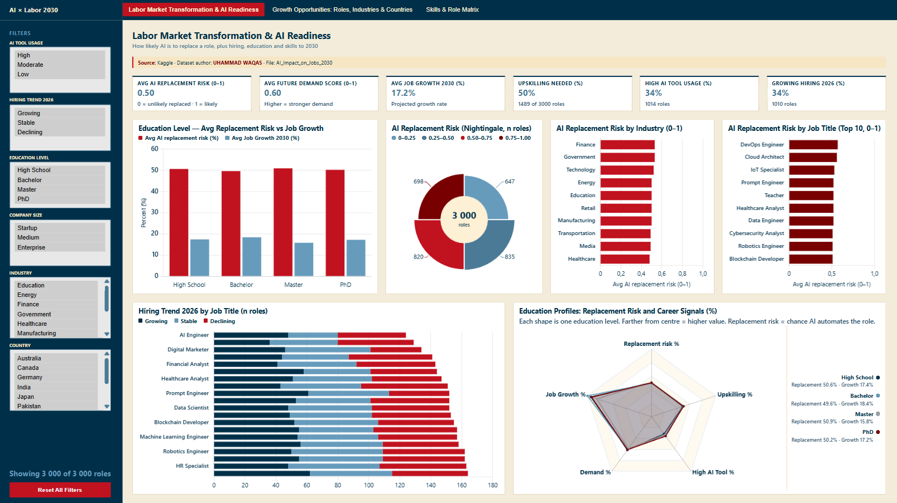
AIИнтерактивный дашборд о том, как искусственный интеллект к 2030 году меняет профессии, отрасли и страны: риск замены, рост занятости, зарплаты, навыки и тренд найма. Около 3 000 ролей и три листа в логике Power BI — трансформация рынка, точки роста, матрица навыков и найма. Проект собран в Cursor.
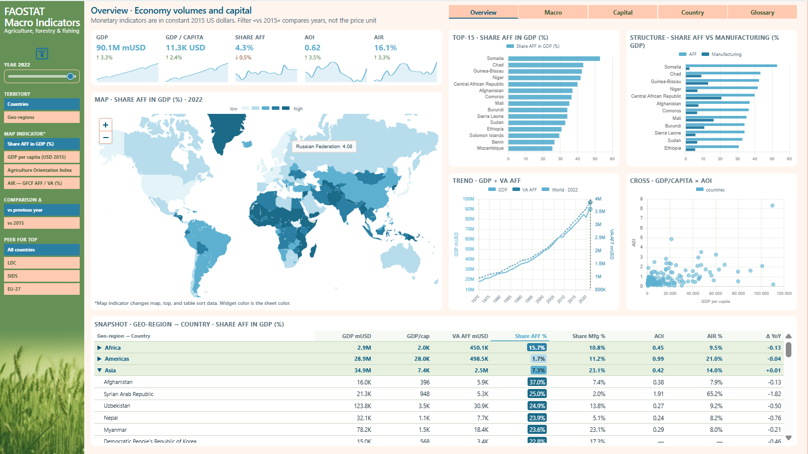
AIFAOSTAT (FAO Statistics) — статистика Продовольственной и сельскохозяйственной организации ООН (FAO). Интерактивный дашборд по макроиндикаторам и запасу капитала: сельское хозяйство, лес и рыба на фоне всей экономики, инвестиции и профили стран.
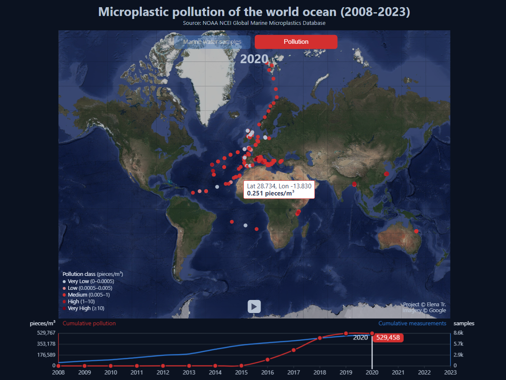
AIИнтерактивная карта проб микропластика в морской воде и классов загрязнения, 2010–2023. Два режима: области проб и заливка по классу загрязнения. На графике — нарастающий итог измерений и загрязнения, шт/м³. NOAA NCEI — Национальные центры экологической информации США.
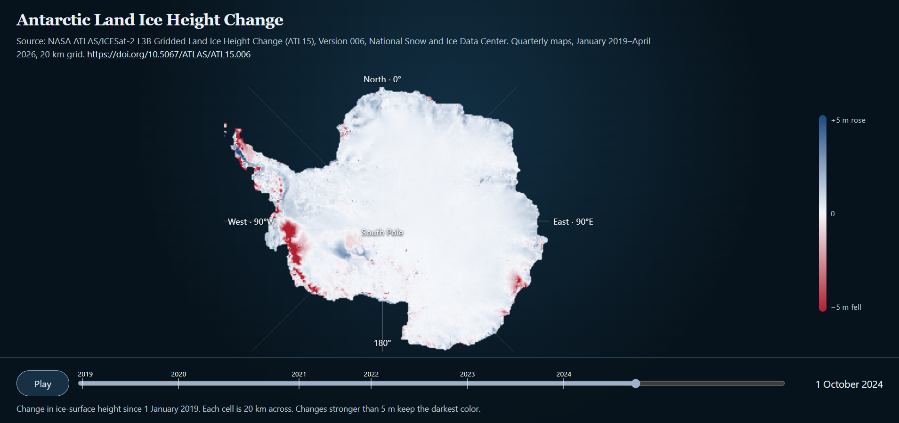
AIПоквартальная анимация изменения высоты поверхности наземного льда Антарктиды по NASA ICESat-2, январь 2019 — апрель 2026. На карте не толщина льда, а изменение высоты относительно 1 января 2019 года. Сетка 20 км.
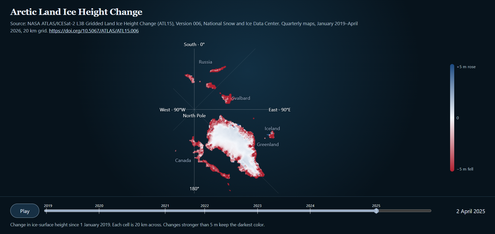
AIПоквартальная анимация изменения высоты поверхности наземного льда Арктики: Гренландия, Канадская Арктика, Исландия, Шпицберген и Российская Арктика. Январь 2019 — апрель 2026, сетка 20 км.
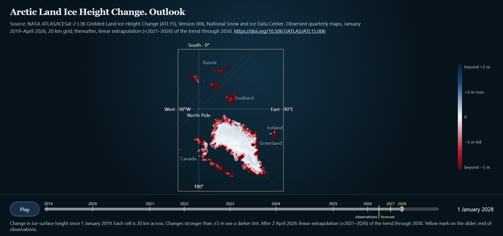
AIНаблюдения ICESat-2 до апреля 2026 и линейное продолжение недавнего тренда высоты до октября 2030. Это не климатический прогноз, а иллюстрация, если недавний темп сохранится.
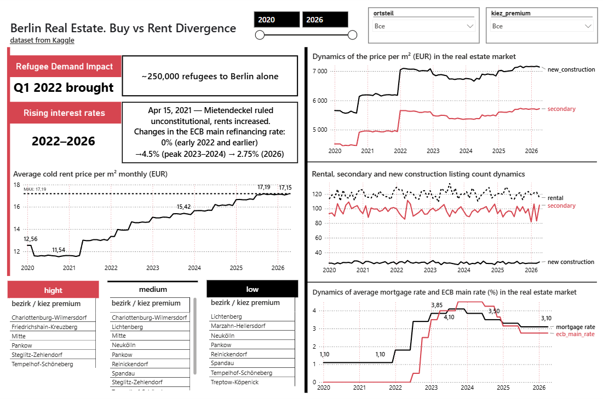
BIАнализ рынка недвижимости Берлина в трёх сегментах — вторичные продажи, новостройки и аренда — по 82 районам. Дашборд в чёрно-красной стилистике 1920-х: экономические факторы, география и берлинская специфика — энергокласс, год постройки, ремонт.
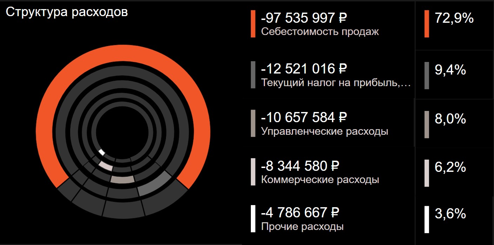
BIТрансформация стандартной кольцевой диаграммы: несколько колец разного размера, карточки вместо меток данных и доли в процентах. Приём из статьи Power BI Masterclass, на основе круговой диаграммы финансового анализа с прогнозом.
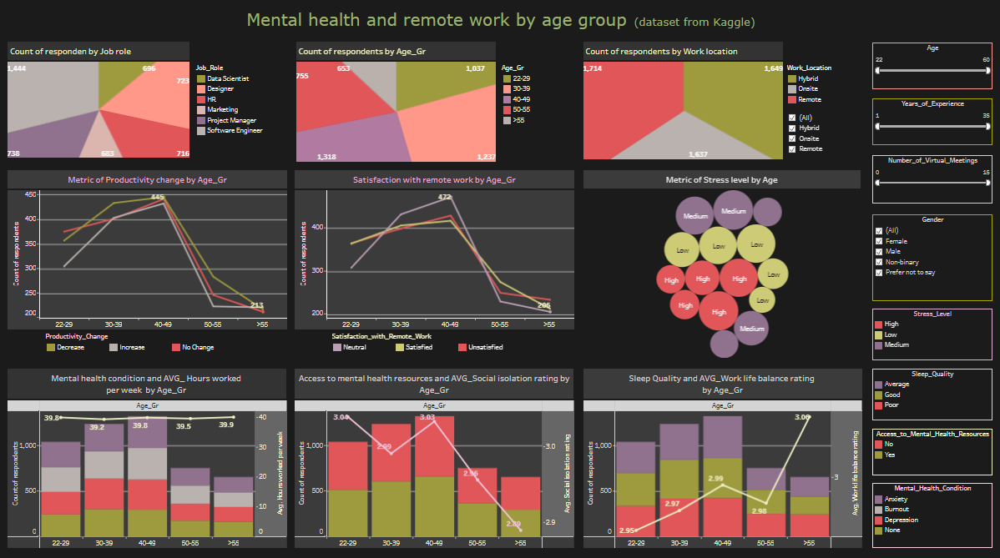
BIАнализ благополучия сотрудников по формату работы (удалённо, гибрид, офис), стрессу, балансу работы и личной жизни, удовлетворённости и показателям социальной изоляции. Эти показатели показаны в том числе по возрастным группам. Два варианта отчёта — Power BI и Tableau.
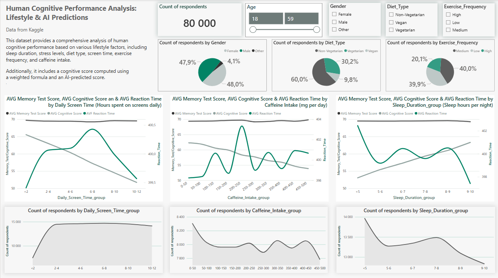
BIАнализ влияния сна, стресса, диеты и экранного времени на когнитивные способности. Отчёт как пример цветографического решения: палитра компании и монохром. Варианты в Power BI и Tableau.
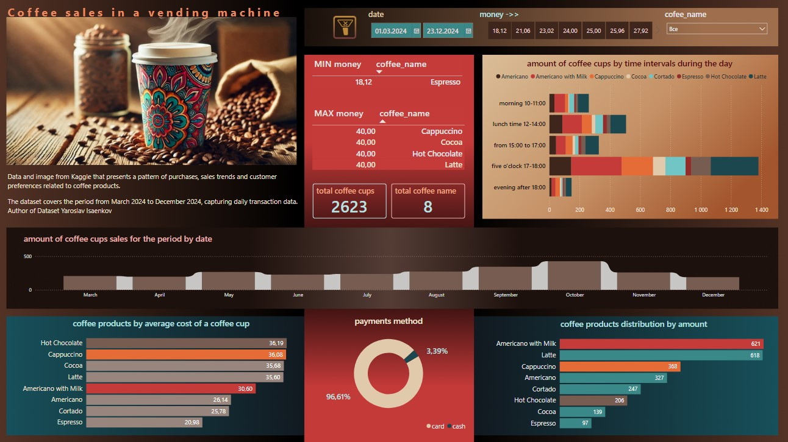
BIДашборд по продажам кофе в автомате: сезон, тип напитка, цена и время покупки в течение дня. Исходные данные дополнены расчётными показателями.
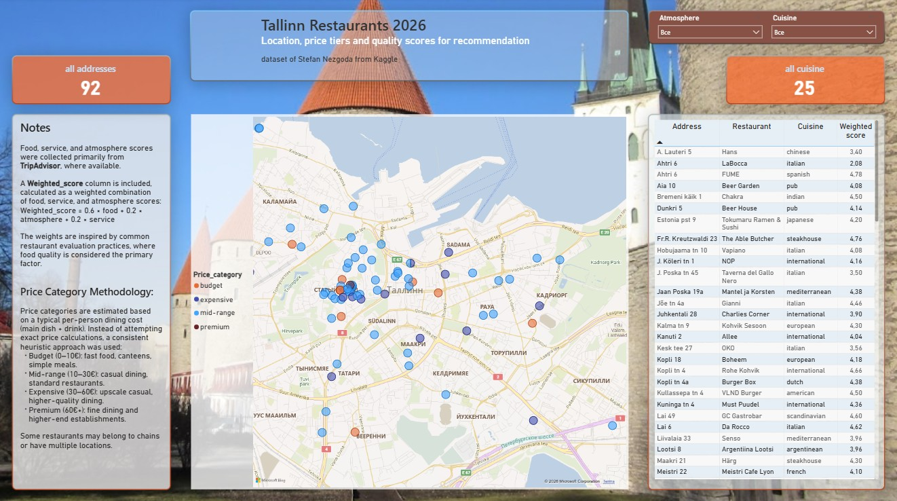
BIСравнение карты в Power BI и Tableau на одном наборе: рестораны Таллина — кухня, цена, оценки еды, сервиса и атмосферы, координаты. Взвешенный балл: 0,6 еда + 0,2 атмосфера + 0,2 обслуживание.
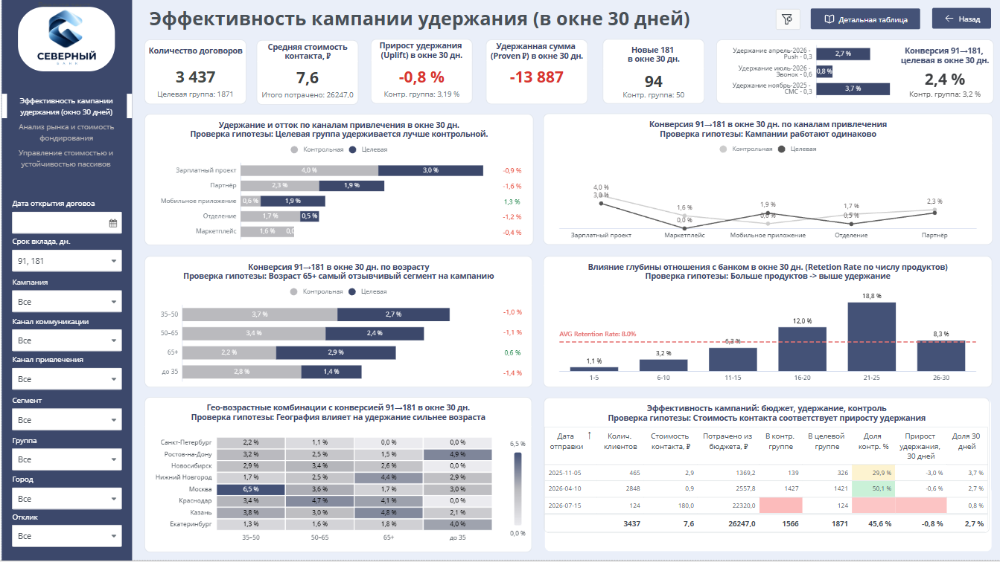
HackathonХакатон Visiology / Cortex, сентябрь–ноябрь 2026, команда BI Ladies. Дашборд по розничным вкладам: CRM и удержание, стоимость фондирования и ликвидность, сроки 91 и 181 день.
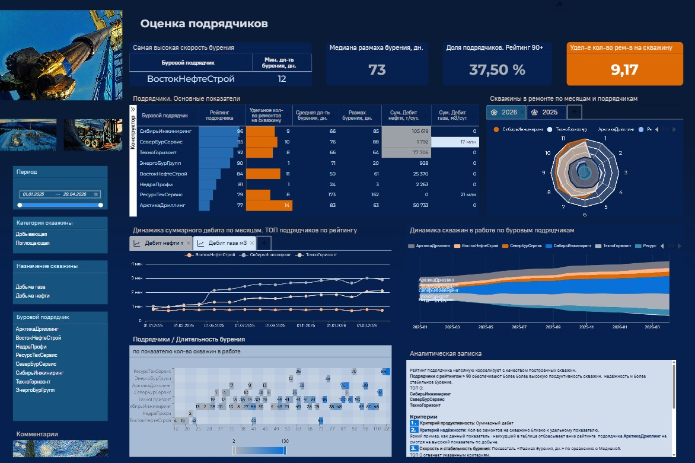
HackathonКонкурс PIX BI, 23 июня — 24 июля 2026. Анализ фонда скважин по месторождениям, оценка буровых подрядчиков и причин ремонтов. Часть виджетов собрана на JS.
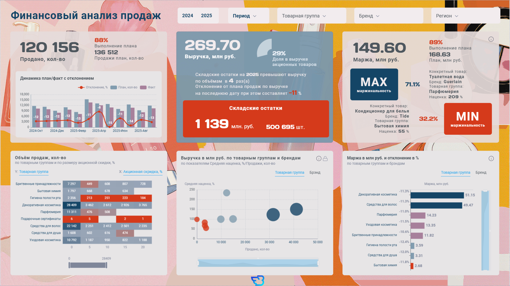
HackathonКонкурс Fastboard, ноябрь 2025. Финансовый анализ продаж: маржинальность брендов, влияние наценки и скидок, прибыль и складские остатки. Дашборд победил в номинации «Выбор члена жюри».
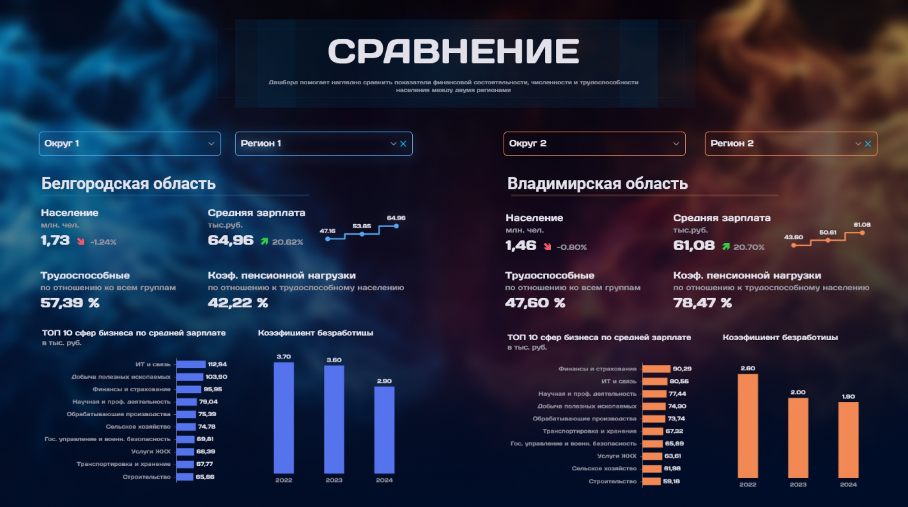
HackathonПроект команды «FASTBOARD» для хакатона лаборатории «СберИндекс».
7 июля 2025 года
Место проведения: Москва, Кутузовский проспект, д. 32, к. 1
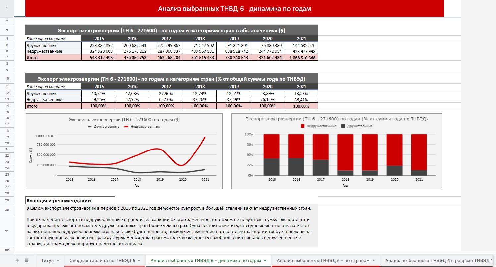
HackathonАнализ наиболее уязвимых мест в выпадающем из-за санкций экспорте Москвы на основе данных Федеральной таможенной службы (ФТС). Организатор: Московский экспортный центр (МЭЦ)
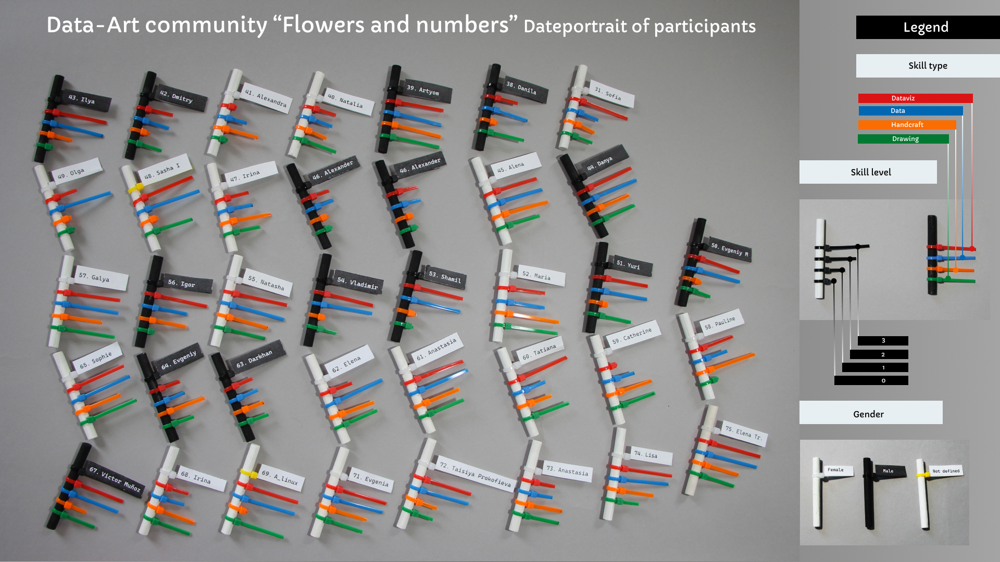
Data ArtМатериальный дата-арт: портрет сообщества «Цветы и цифры» из счётных палочек и цветных кабельных хомутов. Цвет хомута — навык, длина — уровень, цвет палочки — пол. Легенда и компоновка собраны в Figma. Проект стал материалом статьи в Nightingale.
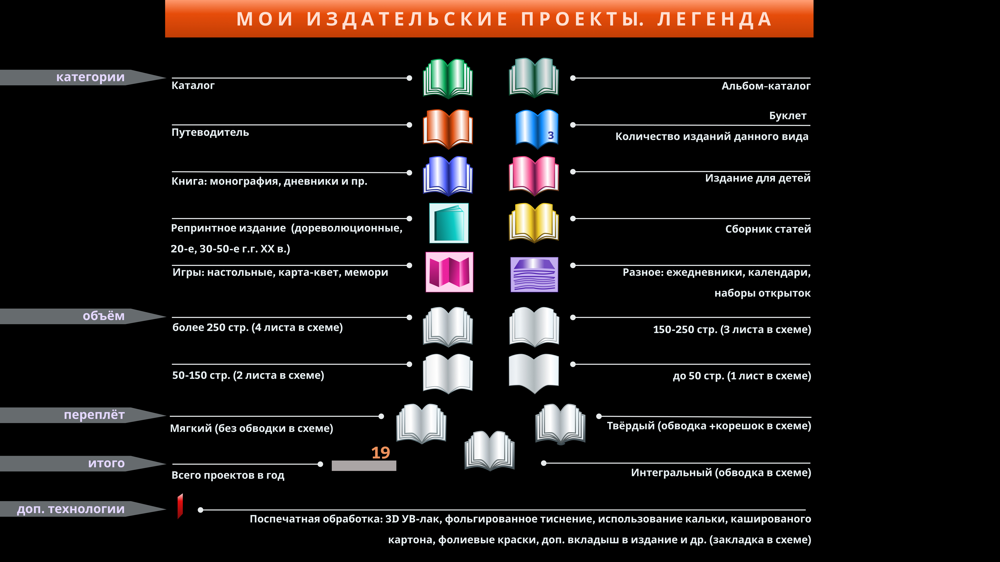
Data ArtДата-арт по собственным издательским проектам: ряды книжных полок как горизонтальный барчарт. Книги, переплёт, репринты и настольные игры закодированы близко к предмету и упрощены, чтобы визуал читался. Собрано в Figma по карандашным эскизам.
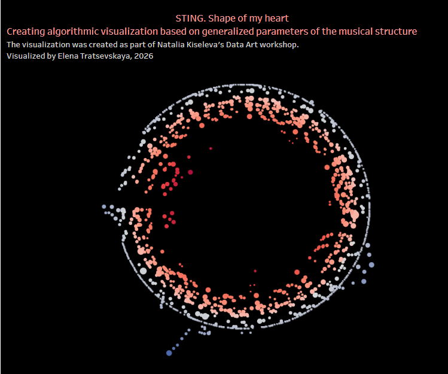
Data ArtПостер по выбранной песне: MIDI разобран в CSV, координаты круга получены через cos() и sin(). Визуализация после воркшопа Натальи Киселёвой; варианты собраны в Tableau, Power BI, rawgraphs, Figma и p5js.
Подготовка основы рекомендательной системы: анализ данных в SQL и Python и итоговая таблица рекомендаций, чтобы предлагать клиентам подходящие курсы и повышать средний чек.
Исследование поведения пользователей в обновлённом приложении мобильной игры Quiz Freeze: как обучение влияет на скорость этапов, оплату и прозрачность прохождения. В выборке — регистрации 2018 года.
Сбор данных о доходах и аудитории сайта в единый отчёт. ARPU считается по категории устройства — ПК, смартфоны и планшеты — и по марке и модели телефона.
Анализ результатов A/B-теста двух посадочных страниц туристической компании: какая страница приносит больше покупок туров. Модель on-demand.